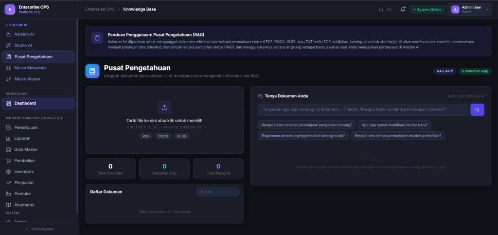

Enterprise OPS
Metadata-Driven AI ERP Platform

Enterprise OPS adalah platform ERP generasi berikutnya yang dirancang menggunakan pendekatan Metadata-Driven Architecture dan Artificial Intelligence. Sistem memungkinkan perusahaan membangun modul ERP baru secara cepat melalui blueprint bisnis, tanpa perlu melakukan pengembangan form, validasi, database, dan dashboard secara manual untuk setiap klien.
Platform menggabungkan Large Language Models (LLM), Retrieval-Augmented Generation (RAG), Dynamic UI Generation, dan Rule Engine untuk menciptakan ERP yang dapat menyesuaikan diri dengan kebutuhan bisnis yang berbeda hanya berdasarkan definisi metadata dan dokumen operasional perusahaan.
Pengguna dapat mengunggah dokumen seperti SOP, kebijakan perusahaan, katalog produk, atau blueprint bisnis, kemudian sistem secara otomatis membangun knowledge base, menghasilkan struktur metadata, membuat antarmuka dinamis, dan menyediakan AI Assistant yang memahami konteks bisnis perusahaan tersebut.
- AI-Powered Knowledge Base (RAG): Membangun pusat pengetahuan perusahaan secara otomatis dari dokumen bisnis yang diunggah.
- Metadata-Driven ERP Architecture: Memungkinkan pembuatan dan penyesuaian modul ERP tanpa modifikasi kode secara manual.
- Dynamic Form Generator: Pembuatan form input secara dinamis berdasarkan definisi metadata dan aturan bisnis.
- Dynamic Table & Dashboard Generator: Visualisasi data transaksional dan analitis secara otomatis sesuai kebutuhan bisnis klien.
- AI Business Assistant: Asisten percakapan interaktif yang membantu mencari informasi dan menganalisis operasional perusahaan.
- Document Intelligence Platform: Pemrosesan dokumen bisnis cerdas untuk mengekstrak informasi penting menjadi data terstruktur.
- Rule Engine & Workflow Automation: Pengaturan alur persetujuan dan otomasi alur kerja secara dinamis berdasarkan aturan bisnis.
- Dynamic Database Schema Management: Penyesuaian skema database relasional secara otomatis mengikuti perubahan struktur metadata.
- Context-Aware AI Query System: Kueri data bisnis menggunakan bahasa alami dengan pemahaman konteks bisnis yang mendalam.
- Business Process Automation: Otomasi proses operasional perusahaan secara efisien, transparan, dan terdokumentasi.
- Enterprise Knowledge Management: Pengelolaan basis pengetahuan korporasi secara terpusat untuk pelatihan dan referensi karyawan.
- AI Analytics & Reporting: Penyajian laporan analitis berbasis kecerdasan buatan untuk membantu pengambilan keputusan taktis.
- Large Language Models (LLM): Pemanfaatan LLM untuk memahami instruksi operasional dan menghasilkan percakapan yang logis.
- Retrieval-Augmented Generation (RAG): Menghubungkan model bahasa ke dokumen internal perusahaan untuk respons yang akurat.
- Document Understanding: Ekstraksi data penting dan hubungan logika dari dokumen tidak terstruktur (SOP, manual, regulasi).
- Context-Aware Reasoning: Penalaran kontekstual yang mendalam untuk menjawab pertanyaan bisnis yang kompleks.
- Natural Language Business Query: Konversi kueri bahasa alami menjadi kueri database relasional secara aman.
- Dynamic SQL Generation: Otomasi pembuatan kueri SQL dari instruksi teks biasa yang diberikan oleh pengguna.
- Knowledge Base Search: Pencarian semantik tingkat tinggi pada dokumen-dokumen korporasi.
- AI-Powered Business Insights: Penyajian ringkasan analitis dan saran aksi bisnis langsung dari data transaksional.
- Semantic Search: Pencarian dokumen berbasis makna kata, bukan sekadar kecocokan kata kunci (text match) persis.
- Enterprise AI Assistant: Agen kecerdasan buatan terintegrasi yang mendampingi operasional harian manajemen dan karyawan.
- Mengurangi Waktu Implementasi ERP: Otomasi pembentukan sistem baru mempercepat deployment ERP di klien dari bulan menjadi hari.
- Fleksibilitas Skala Bisnis: Sistem mudah beradaptasi terhadap perubahan model bisnis klien tanpa perlu menulis ulang kode dasar.
- AI Assistant Kontekstual: Menyediakan asisten pintar yang langsung memahami SOP dan regulasi unik perusahaan secara instan.
- Efisiensi Pemeliharaan & IT Overhead: Memangkas biaya overhead tim IT untuk pengembangan database dan antarmuka dinamis.
| Peran | AI Engineer • Full-Stack Developer • System Architect |
| Instansi / Klien | Enterprise AI Solutions |
| Tahun | 2026 |
| Tech Stack |
Python
FastAPI
Vue.js
PostgreSQL
Large Language Models (LLM)
Retrieval-Augmented Gen (RAG)
Vector Database
SQLAlchemy
REST API
JavaScript / HTML5 / CSS3
Docker
|